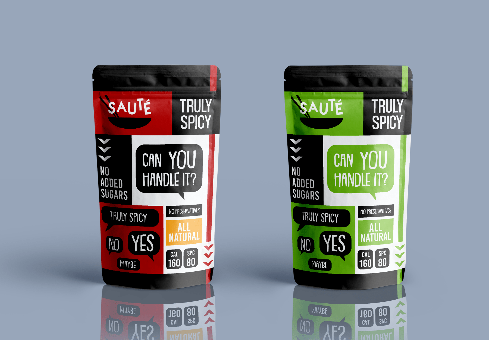
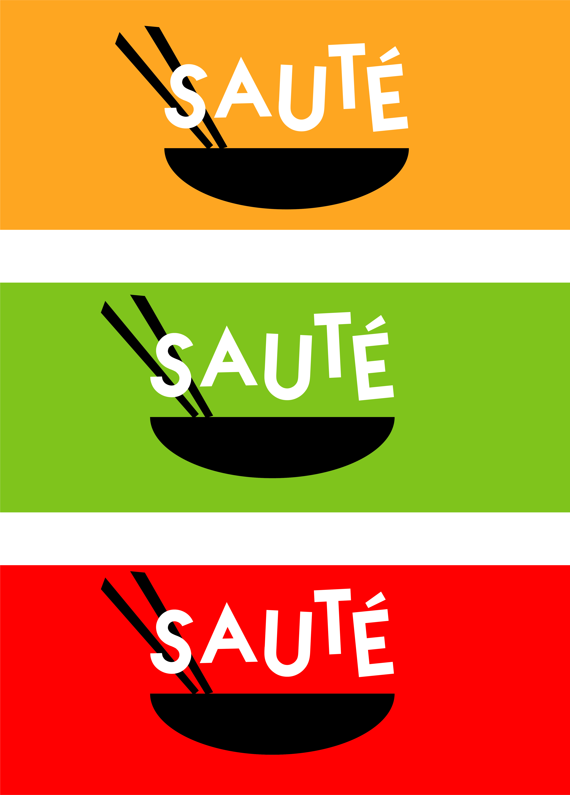
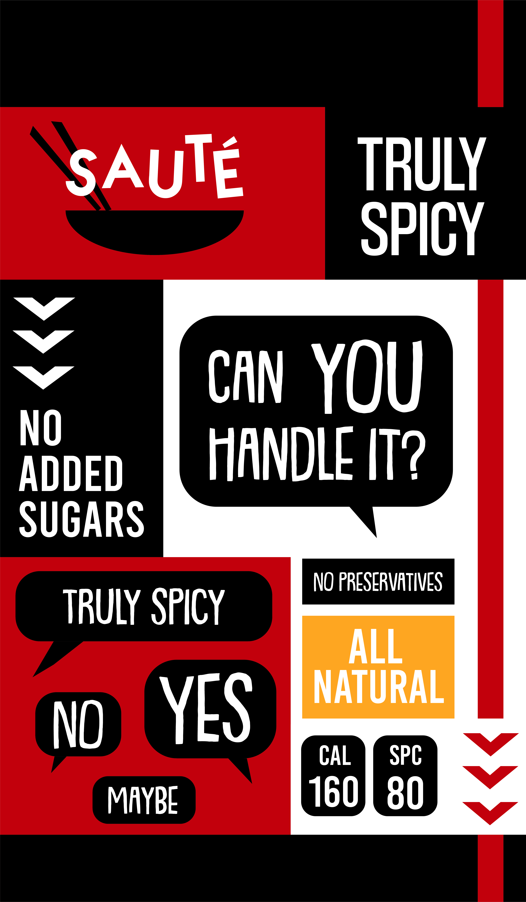
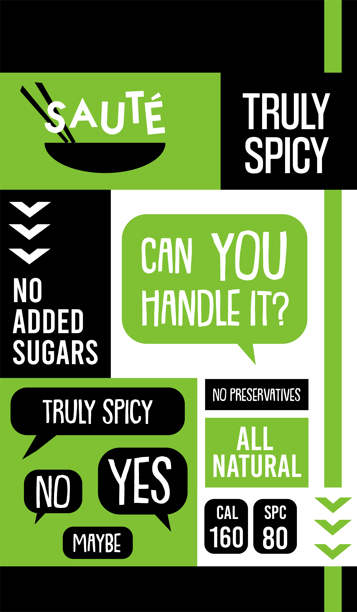
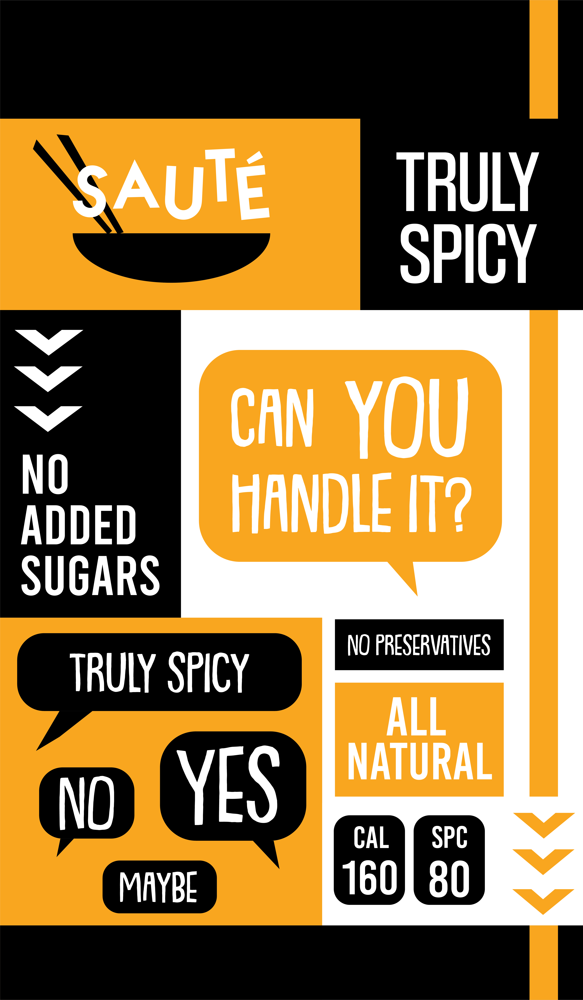

Project Objective
Sauté is a wok restaurant specialized in Asian cuisine. One of the restaurant’s highlights is the variety of spicy sauces they offer to accompany their meals. For this project, I was required to create a fun, colourful and minimalist logo for the restaurant as well as a custom packaging for the sauces.
Concept
Having been the original designer of the logo, creating a packaging that was consistent with the brand was very straightforward. The design had to be minimalistic and not to reveal the content inside. Ultimately I decided to create a fun, typographic design. Since I didn’t want the design to be too overwhelming, I tried to use no more than 2 colours (other than black and white).
Outcome
The final design is a balanced composition that fully meets the project requirements. Three different designs were created for “mild”, “spicy” and “ultra spicy” which can be easily recognized by the colour scheme, which was designed to resemble a traffic light. The fonts I used have a funny, playful look without losing readability and accompany the logo without being distracting.
  